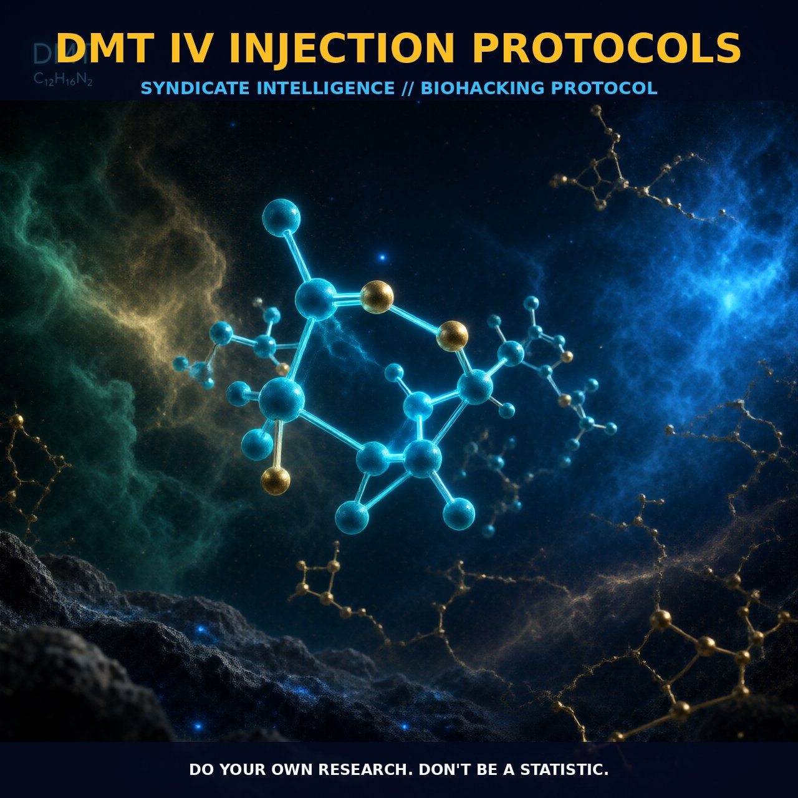

Mechanics and Protocols of DMT IV Injection

1. The Mechanism
The administration of DMT via intravenous (IV) injection is a precise method that delivers a controlled dose directly into the bloodstream. DMT, a naturally occurring hallucinogen, primarily acts on serotonin receptors, particularly the 5-HT2A subtype, leading to profound psychoactive effects. The IV route provides the advantage of rapid onset and dose control, making it ideal for both research and experiential purposes.
When administered intravenously, DMT quickly reaches the brain, achieving peak plasma concentrations within seconds to minutes. A bolus injection typically provides a dose of 0.5 mg/kg for IV, dissolved in 0.3 mL of saline solution and filtered through a 0.22 micron inline filter. This rapid entry into the brain leads to a swift onset of effects, reaching peak intensity within 2 to 3 minutes due to DMT's high lipid solubility, which allows it to cross the blood-brain barrier efficiently.
The IV route also allows for the use of target-controlled infusion (TCI) to maintain a stable concentration of DMT in the brain over an extended period, facilitating prolonged and immersive experiences. This involves a bolus injection followed by a continuous infusion to maintain the desired plasma levels.
2. Biological Leverage
DMT's effects are mediated through its interaction with various serotonin receptors, primarily the 5-HT2A and 5-HT2C subtypes, as well as the sigma-1 receptor. These interactions trigger a cascade of neurochemical changes that result in altered perception, cognition, and emotional states. The 5-HT2A receptor activation leads to increased intracellular calcium levels, which in turn modulates neurotransmitter release and neuronal firing rates. This mechanism is responsible for the vivid visual and auditory hallucinations experienced during DMT trips.
Additionally, DMT's interaction with the sigma-1 receptor modulates calcium signaling and mitochondrial function, contributing to the overall psychedelic experience. Research has shown that DMT administration can produce lasting subjective effects for up to 4 to 6 hours when inhaled or administered intravenously. Continuous infusion protocols aim to extend these effects by maintaining a stable concentration of DMT in the brain. However, the transient nature of DMT's effects suggests that physiological tolerance may develop, particularly during prolonged continuous infusions.
This tolerance could be due to the rapid metabolism of DMT by monoamine oxidase (MAO) enzymes, which degrade the compound into inactive metabolites. By maintaining a stable concentration of DMT in the brain through continuous infusion, the goal is to sustain the desired psychoactive effects over an extended period, allowing for a more immersive and prolonged experience.
3. Tactical Implementation
To implement DMT IV injection protocols effectively, it is crucial to follow specific dosing and administration guidelines. The bolus injection dose ranges from 0.5 mg/kg to 1 mg/kg, depending on the route of administration. For IV administration, a dose of 0.5 mg/kg dissolved in saline solution is typically used. The dose is delivered through a 0.22 micron inline filter to ensure sterility and prevent particle contamination.
After the bolus injection, a continuous infusion is initiated to maintain a stable concentration of DMT in the brain. Infusion rates can vary, but a typical protocol might involve a bolus dose followed by an infusion rate of 0.2 mg/min to 1.9 mg/min, depending on the desired intensity of the experience. Monitoring of heart rate, blood pressure, and other physiological parameters is essential to ensure safety during the infusion. The continuous infusion allows for gradual onset and sustained effects, providing a more immersive experience compared to the rapid onset and brief duration of a bolus injection alone.
Additionally, the use of a target-controlled infusion system can help maintain a steady state of DMT concentration, optimizing the duration and intensity of the experience. It is important to note that individual responses to DMT can vary, and the development of physiological tolerance over time may require adjustments in dosing protocols. Ensuring a smooth and controlled infusion can enhance the stability and duration of DMT-induced effects, making the experience more profound and enriching.
Prostar Life Hack
Aim for a bolus dose of 0.5 mg/kg of DMT, followed by a continuous infusion at 0.2 mg/min to 1.9 mg/min, maintaining heart rate and blood pressure monitoring throughout the process for safety and efficacy.
[ AUTHOR: LEAD TECHNICAL RESEARCHER ]